Civil Engineer · Water Resources & Climate Researcher
Sujal Soti
Civil engineering graduate from the Institute of Engineering, Tribhuvan University, focused on hydrology, irrigation, and the intersection of climate science and infrastructure. Building a research foundation in climate-resilient water resource management.
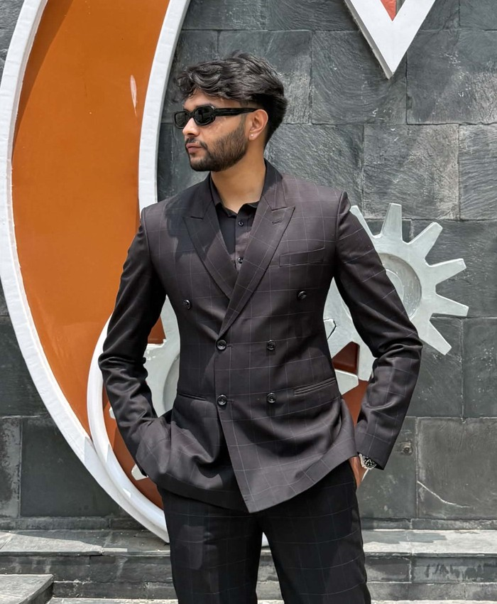
Add headshot.jpg
to assets/images/
01About
I recently completed my Bachelor of Civil Engineering (First Division, 74.66%) at the Institute of Engineering, Thapathali Campus, Tribhuvan University. My interests sit at the intersection of civil infrastructure and environmental science — particularly how climate change is reshaping water availability, irrigation demand, and the systems engineers design around them.
Alongside coursework in hydrology, fluid mechanics, and environmental engineering, I've worked on both the research side (climate-crop modelling) and the field side (site supervision, public infrastructure) of civil engineering. My AquaCrop study on climate change impacts on crop water requirements in Chitwan has been accepted in H2Open Journal (Elsevier, Q2). I'm a Registered Engineer with the Nepal Engineering Council and am looking toward graduate study in water resources and climate engineering.
02Research Experience
(i) Impacts of Climate Change on Crop Yield and Crop Water Requirement
Undergraduate ThesisSupervisor: Er. Nirajan Devkota, Department of Civil Engineering, IOE Thapathali Campus
- Assessed impacts of projected climate change on crop yield and irrigation water demand using AquaCrop simulation modelling
- Performed climate projection analysis and climate data bias correction using R and Python
- Developed computational, data-driven workflows for hydro-agricultural climate impact assessment
Thapa, T., Shrestha, S., Soti, S., Gautam, V., Parajuli, S., Bhatta, S., Poudel, G.P., Chhetri, R.B., & Devkota, N. (2026). Assessment of climate change impact on crop yield and irrigation water requirement of major cereal crops in Chitwan, Nepal. H2Open Journal (Elsevier, Q2), accepted. DOI: 10.1016/j.htopen.2026.100094
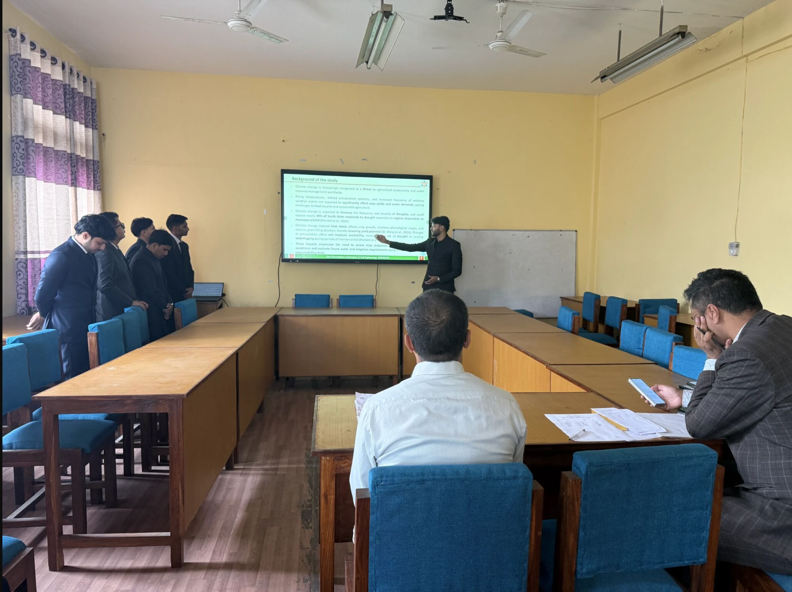
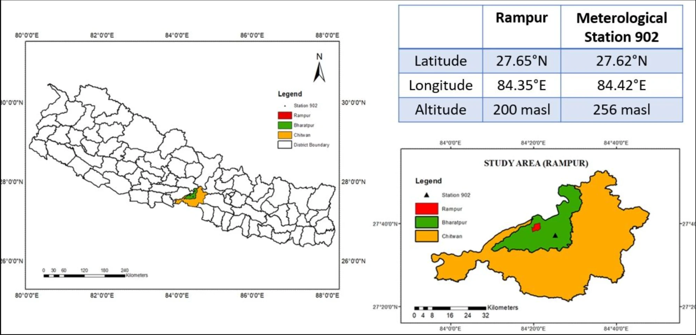
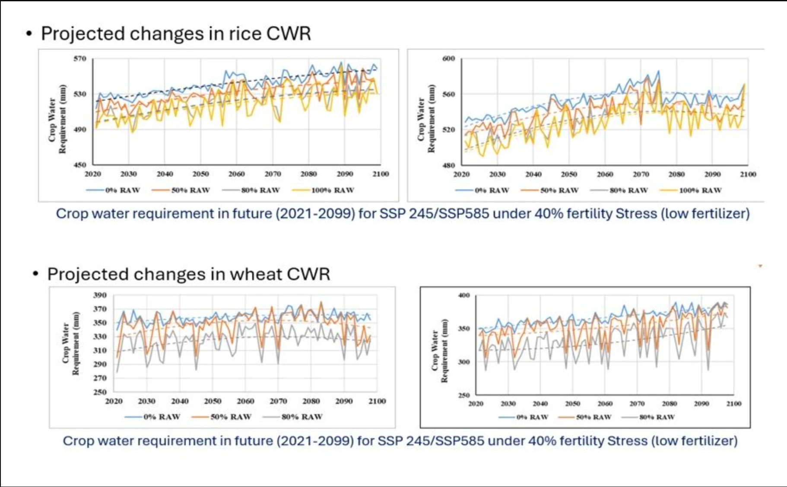
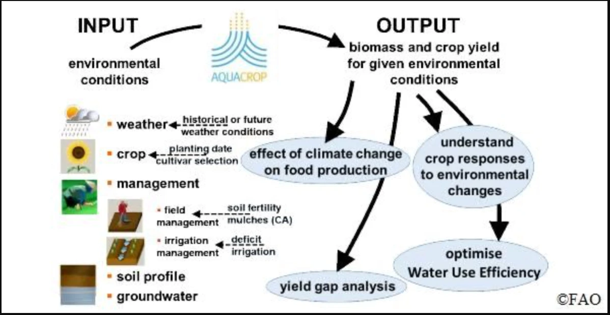
(ii) Urban Drought Assessment Using Standardized Drought Indices
OngoingIndependent Research · Ongoing
- Characterizing drought frequency, severity and duration across Nepali cities using the Standardized Precipitation Index (SPI), computed with DrinC (Drought Indices Calculator)
- Reconstructed incomplete monthly precipitation records (1980–2026) at five meteorological stations (Dhangadhi, Bhairahawa, Rampur, Janakpur, Dharan) using the Normal Ratio Method
- Comparing drought vulnerability between hill and Terai cities, where groundwater-dependent water supply requires indices that reflect groundwater and recharge conditions
- Building toward drought monitoring and early-warning applications for urban water management in Nepal
Research Interests
03Professional Experience
Engineer (7th Level, Temporary – Shram Bank)
Sampada (Heritage) Department, Kathmandu Metropolitan City · Present
- Measure and estimate paint quantities and costs for restoration painting of heritage structures (temples, Dhunge Dhara)
- Consult with supervisors and painters, giving technical direction to both to keep work on specification and schedule
Junior Engineer
Public Works Department, Kathmandu Metropolitan City
- Assisted in planning, supervision, and monitoring of public infrastructure projects
- Reviewed engineering drawings and technical documentation; coordinated with contractors and government officials
Site Engineer / Site Supervisor
Residential and Public Infrastructure Projects
- Supervised construction quality and progress on building, hydraulic, and road projects
- Prepared quantity estimates and site reports; coordinated with contractors and consultants
Survey Camp & Fieldwork
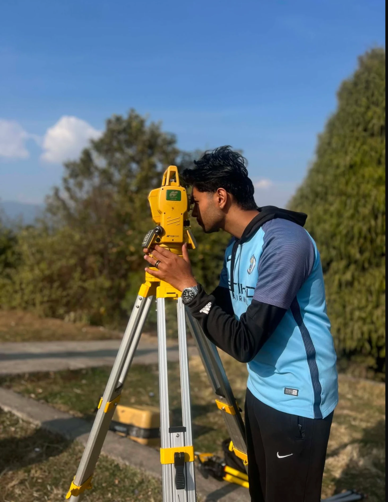
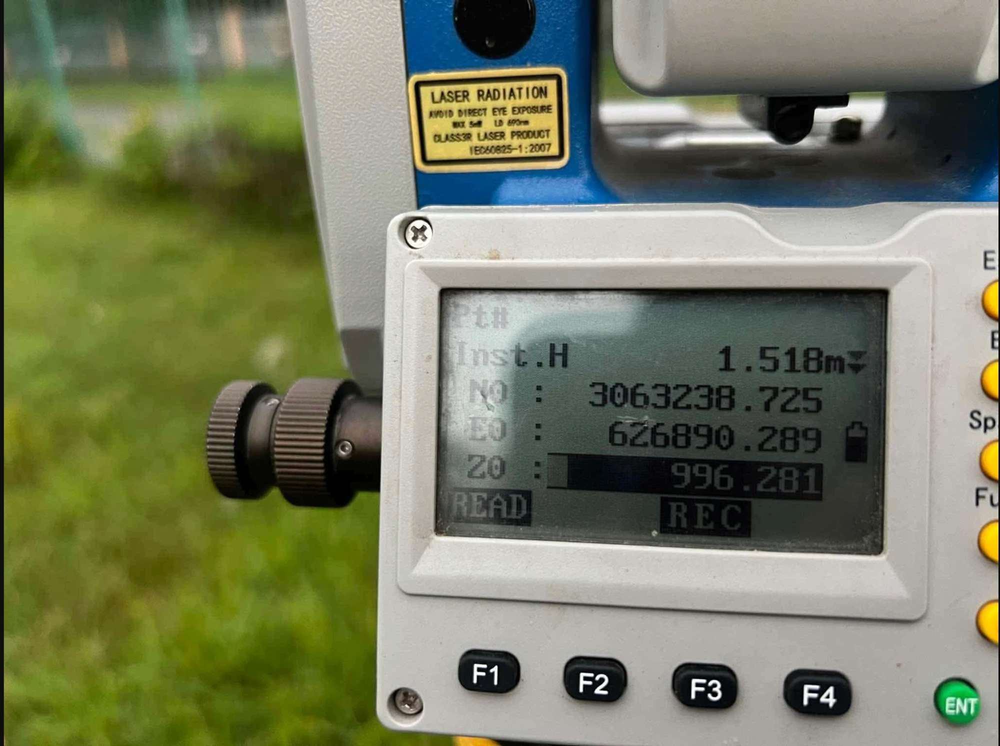
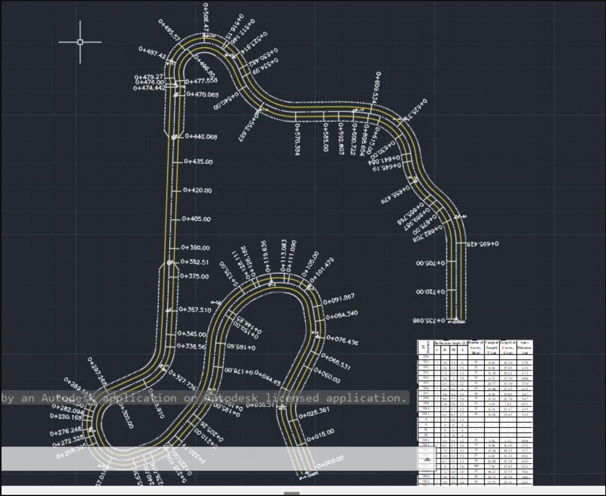
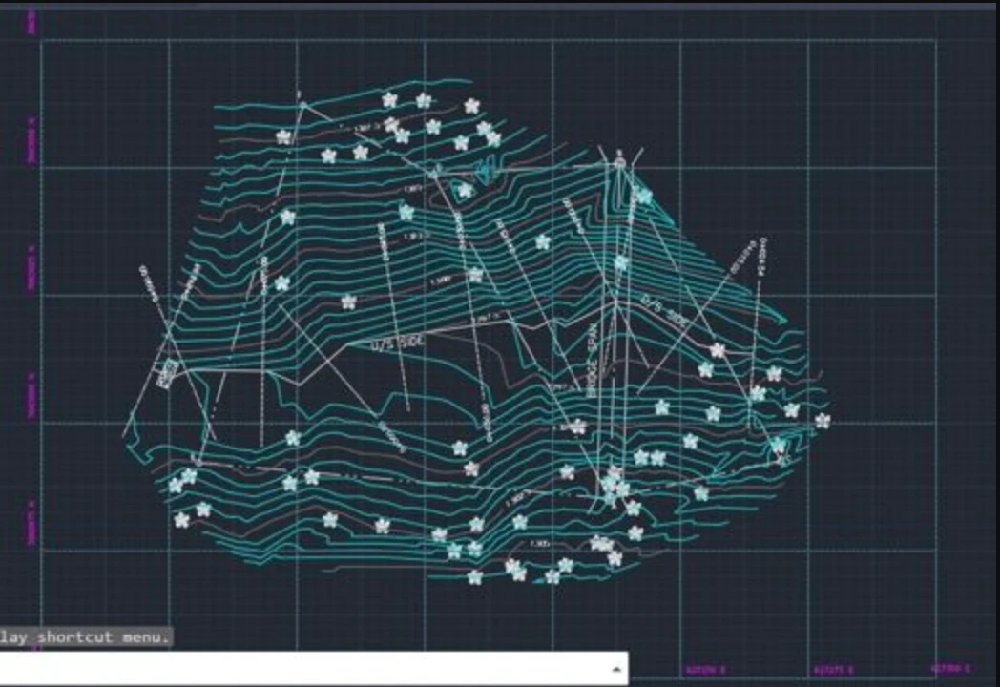
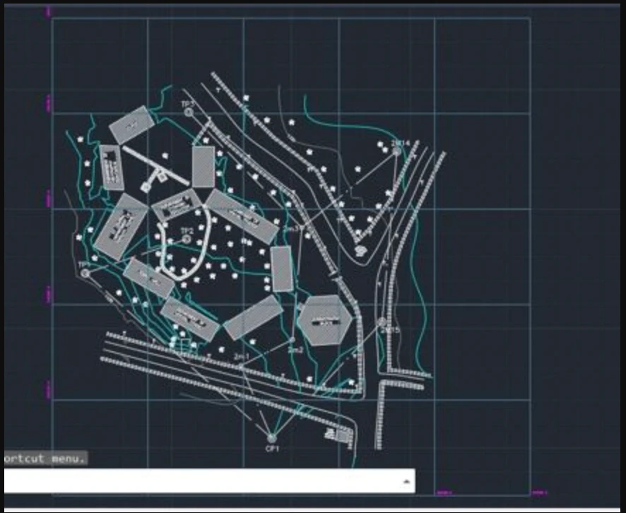
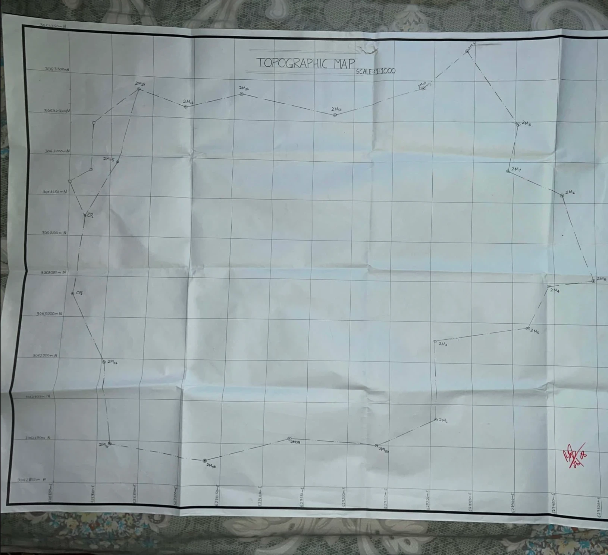
04Education
Bachelor of Civil Engineering
2026Institute of Engineering (IOE), Thapathali Campus, Tribhuvan University — Kathmandu, Nepal
First Division · 74.66%
Relevant Coursework: Hydrology, Irrigation Engineering, Environmental Engineering, Fluid Mechanics, Water Supply Engineering, Engineering Geology, Numerical Methods
05Technical Skills
Programming & Data Analysis
Engineering Software
06Achievements & Certifications
IELTS Overall Band Score
Listening 8.0 · Reading 6.5 · Writing 6.0 · Speaking 6.5
Registered Engineer
Nepal Engineering Council
Building Analysis & Design Workshop
Civil Engineering Students' Society (CESS), Thapathali Campus · hands-on training in AutoCAD, ETABS & SAFE
View Certificate →07Get in Touch
Open to graduate research opportunities, scholarships, and collaborations in civil, environmental, and water resources engineering.